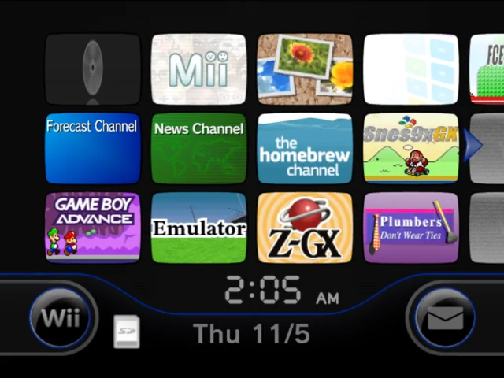

DarkWii Reimagined
The Wii Menu in the dark, with the accent color of your choice. Pick one of thirteen colors below, check the previews, and download the theme for your region.

Choose a theme
Downloads
| Region | csm for Wii Menu 4.3 | mym for any Wii Menu 4.x |
|---|
Previews
Installing
- Install Priiloader first. It can save your Wii if a theme goes wrong.
- Open Wii Settings and read the version in the top right corner, like Ver. 4.3U.
- Download the csm for that region. The csm files are for Wii Menu 4.3 only. The mym is the theme on its own, for building your own csm on any 4.x menu.
- Install it with csm-installer or the theme installer of your choice.
Never install these on a Wii U. They're built from the Wii's own menu, and a Wii theme on a Wii U's Wii mode can brick it. Never install a csm for a different region, either.
DarkWii is by DVBisOK. The accent colors follow cmyksoda's Colorful Wii Menu Themes. Screenshots are from Dolphin, taken with the same method.